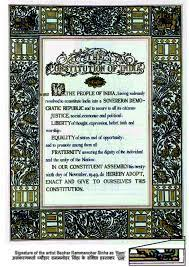

Constitution of India

The Constitution of India is the supreme law of India.The document lays down the framework that demarcates fundamental political code, structure, procedures, powers, and duties of government institutions and sets out fundamental rights, directive principles, and the duties of citizens, based on the proposal suggested by M.N. Roy. It is the longest written national constitution in the world.The constitution declares India a sovereign, socialist, secular, 5and democratic republic, assures its citizens justice, equality, and liberty, and endeavours to promote fraternity.
Background:
In 1928, the All Parties Conference convened a committee in Lucknow to prepare the Constitution of India, which was known as the Nehru Report.From 1947 to 1950, the same legislation continued to be implemented as India was a dominion of United Kingdom for these three years, as each princely state was convinced by Sardar Patel and V. P. Menon to sign the articles of integration with India, and the British Government continued to be responsible for the external security of the country.
Previous Legislation:
The constitution was drawn from a number of sources. Mindful of India's needs and conditions, its framers borrowed features of previous legislation such as the Government of India Act 1858, the Indian Councils Acts of 1861, 1892 and 1909, the Government of India Acts 1919 and 1935, and the Indian Independence Act 1947.The latter, which led to the creation of Pakistan, divided the former Constituent Assembly in two.